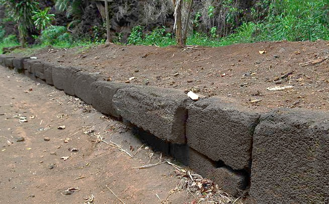

Menehune Ditch / Kīkīaola

Menehune Ditch, traditionally known as Kīkīaola, is one of the most remarkable surviving engineering works in Hawaiʻi. Located on the inland edge of Waimea, Kauaʻi, the stone-lined ʻauwai once carried water from the Waimea River toward taro fields in the lower valley. At first glance today, the visible portion may look like a low roadside wall. But that exposed stonework is only a tiny fraction of a much larger irrigation system, much of it buried beneath Menehune Road.
The name Kīkīaola is often interpreted as “sprouting springs of Ola.” In one reading, kīkī suggests water shooting, spurting, or springing forth, while Ola recalls the chief associated with the work. The word ola also carries meanings of life, health, and survival. In that sense, the name works almost like a metaphor: engineered water emerging from the cliff to bring life to the dry fields below.
The engineering problem was severe. The Waimea River flowed out of the canyon and toward the sea, but a steep basalt cliff blocked water from easily reaching the fertile flats west of the river. Heavy rains could send destructive floods down the main channel, while nearby farming lands remained too dry to reliably support loʻi kalo. Kīkīaola solved this problem by guiding water along the cliff line and around the natural barrier, delivering controlled flow to the lower valley.
What makes Kīkīaola especially unusual is its stonework. Most traditional Hawaiian stone construction used naturally shaped river stones or rough lava rock carefully stacked without mortar. Kīkīaola is different. Its walls include finely worked basalt blocks, often described as dressed stones, cut and fitted with a precision not commonly seen elsewhere in Hawaiian irrigation works.
Because the masonry was so distinctive, the ditch became closely tied to stories of the Menehune, the legendary master builders of Hawaiian tradition. One version tells of King Ola of Waimea, who needed water brought around the cliff to irrigate his lands. The Menehune were said to have formed a seven mile long line from the quarry to the river, passing stones hand to hand and completing the work in a single night before sunrise.
The Menehune tradition is often treated as legend, but it also points toward a real historical question: who built Kīkīaola, and why does its masonry look so different? Archaeologists generally view the ditch as a pre-contact Hawaiian engineering achievement, with portions possibly dating to the 14th century or earlier. Whether understood through moʻolelo or archaeology, the site reflects extraordinary skill in stone selection, water control, and construction.
Kīkīaola also tells a story about how water shaped power. In traditional Hawaiʻi, control of water meant food, settlement, and political strength. A system capable of irrigating broad fields of kalo could sustain large communities and support chiefly authority. Healthy, well fed communities would grow and a small fraction of their crops would be provided as tribute to the ruling chiefs. The ditch was therefore not only an agricultural tool. It was infrastructure in the deepest sense: a way of organizing land, labor, water, and life.
Much of what visitors see today is also a story of burial. In the early twentieth century, road construction along the cliff and river edge covered much of the original structure. Menehune Road was built directly beside and over portions of the ancient ʻauwai. To create a stable roadbed, fill and debris were placed against the old wall, leaving only the upper section visible. What now appears as a low stone curb was once part of a much taller and more complex water system.
This transformation reflects a familiar pattern in Hawaiʻi’s landscape. During the plantation era, older Hawaiian structures were often treated as obstacles, useful foundations, or convenient sources of stone rather than monuments that required preservation or protection. In Waimea, the needs of road access, plantation transport, and modern development altered Kīkīaola into what remains today. The ancient ditch was gradually buried into the infrastructure of a new economy. Water was diverted further up to feed a new crop, one that would cause mass immigration and forever change Hawaiʻi’s history.